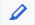
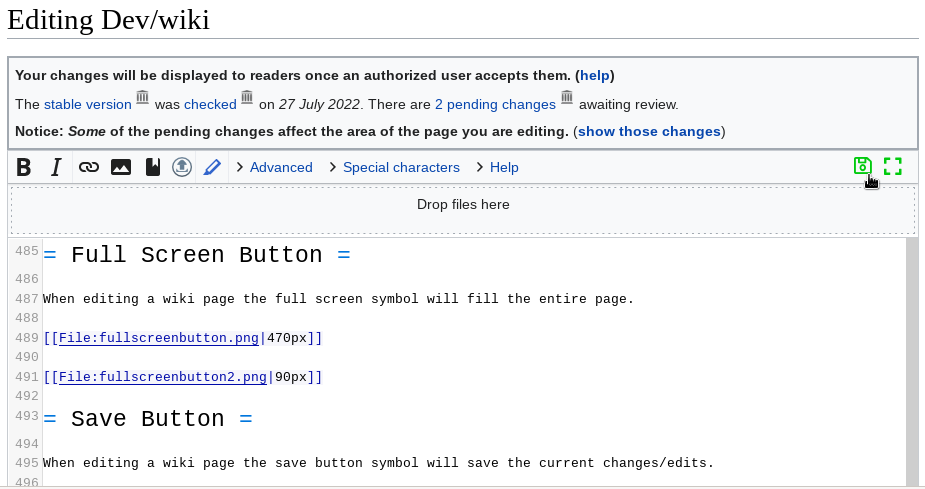
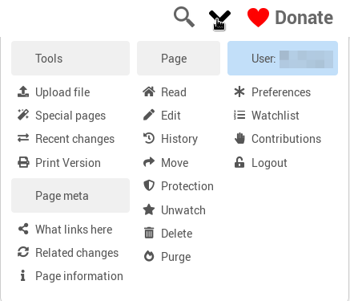
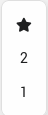
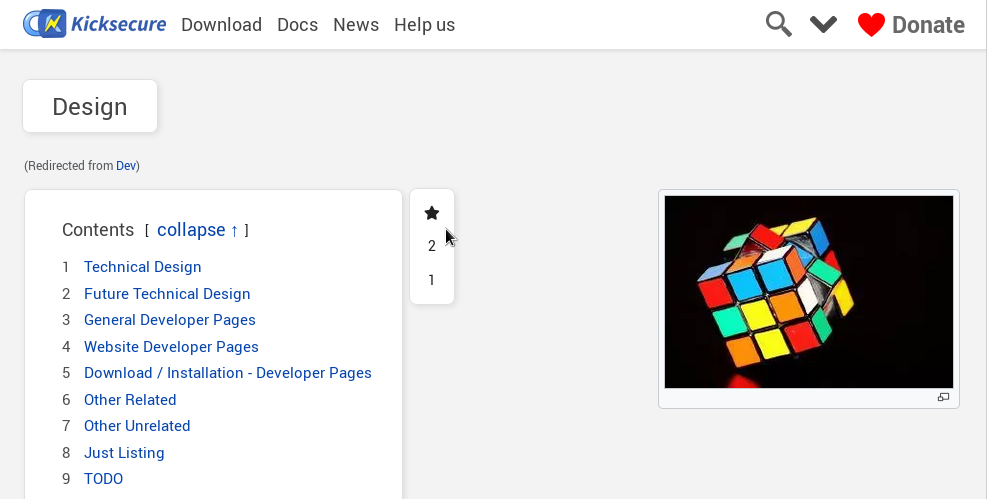
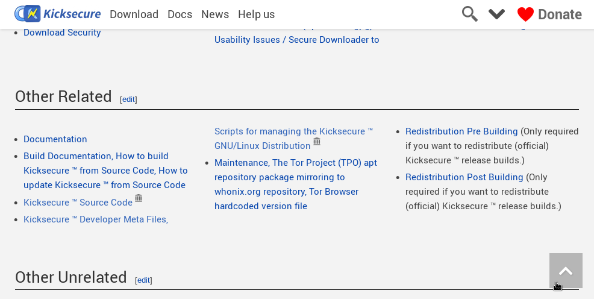
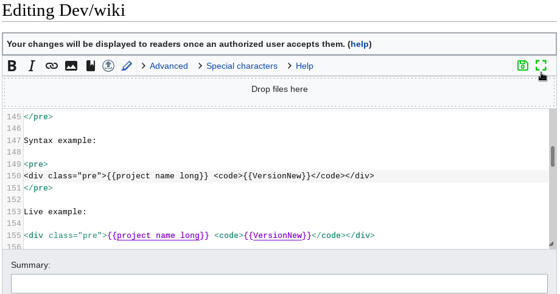

{kind=link}
{kind=link}
{kind=link}
{kind=link}
We believe security software like Whonix needs to remain Open Source and independent. Would you help sustain and grow the project? Learn more about our 14 year success story and maybe DONATE!
https://www.kicksecure.com/wiki/Template:Devwiki
Syntax Highlighting vs Link Suggestions, Links with Web Archive, Onions, CodeSelect, Wiki Editor Save Buttons, Floppy Disc Restore Button, Super Menu, Table of Contents Level Switcher, Back to the Top Button, Full Screen Button, Expand Button, Mini Navigation, External Redirects Documentation, MultiWiki, mass search and replace - ReplaceText, and more.
Wiki History
Check the
 (down) ("
(down) ("↓") symbol in the wiki website header. In the wiki
header. Not here in this wiki text content. This is also called Super Menu.
Click on History. It leads, for example, here:
Login required.
Login is unfortunately required for wiki history due to scraping bots by AI companies and others. Details: Wiki History
Flagged Revisions
There you can see which edits were successfully registered and which ones were not. The wiki interface is based on MediaWiki, the same Free Software platform used by Wikipedia. While we have applied customizations, they do not affect the explanation provided here.
An important inherited feature from MediaWiki is the ability to compare any two revisions of a page. This makes it straightforward to verify which edits have been received and whether any content has changed.
One common source of confusion is Extension:FlaggedRevs, a MediaWiki extension that we use to moderate edits. This extension introduces a distinction between submitted edits and publicly visible edits.
Most users -- those who visit the wiki to read but do not contribute -- are shown the last revision that has been reviewed and approved by an administrator. This is referred to as the "live website version" or the "stable version." Consequently, editors may believe that their edits were lost if they do not immediately appear on the live site. However, this is a misunderstanding: the edits have been saved but have not yet been approved.
If an edit has not yet been reviewed, the wiki will display a label
such as Pending or Checked in the top right
corner of the page. These indicators signify that one or more edits are
awaiting moderation and have not been confirmed yet.
There is no requirement to wait for admin confirmation before making further edits. When you click the edit button while viewing the live version of a page, you will already be editing the latest pending version -- meaning your changes will be layered on top of the most recent unapproved content.
After you save your changes, all pending (unconfirmed) edits -- including yours and those from other contributors -- will continue to be visible to you and other editors who are logged in.
To view pending edits more explicitly, hover your mouse over the
Pending or Checked label in the upper right. A
tooltip (passive popup) will appear with information like:
This is the stable version, checked on 27 April 2025. 3 pending changes await review.
The phrase 3 pending changes is a clickable link.
Clicking it brings you to a *diff* -- a side-by-side display of what was
changed -- comparing the latest confirmed version against the
unconfirmed version. Below this difference view, the full pending
(unconfirmed) version of the page is shown.
If you prefer direct access to the unconfirmed version of a page, you can use a specific URL format:
Note: Replace Dev/wiki with the actual title of the wiki
page, such as Telegram.
https://www.whonix.org/w/index.php?title=Telegram&stable=0s
This URL forces the browser to display the pending version, bypassing the default view of the stable version.
Even if edits have been approved, caching issues can lead to non-logged in users stills the old version. Sometimes this will fix itself spontaneously or will be fixed once admins manually purge the cache.
Header versus Extraneous Newline at the Top
Header should come first on every page
WikiSEO newline
https://github.com/octfx/wiki-seo/issues/30
Save Buttons
JavaScript (JS) version:
Save Continue - easy
- easySave Changes[Missing Screenshot] - advanced editors
If you are not sure which button to use, the
Save Changes is a good choice. Feel free to experiment with
the Save Changes button and use it if it seems useful for
you.
no-JavaScript (noJS) version:
Submit changes
A bit of potential confusion:
The button Submit changes is renamed to
Save Changes when JS is enabled.
Pen Symbol - Syntax Highlighting

Enabling/Disabling syntax highlighting which is useful for editors.
With:

Without

Symbol:
This is thanks to extension CodeMirror.
Syntax Highlighting vs Link Suggestions
When enabling syntax highlighting using the Pen Symbol,
link suggestions (by extension
LinkSuggest) will be broken. This is an upstream bug. Extension:CodeMirror
incompatibility with, breaks Extension:LinkSuggest
So if the editor wishes to receive link suggestions, (temporarily)
disable syntax highlighting using the Pen Symbol. When the
editing task requires no link suggestions, enabling syntax highlighting
might be useful. It is easy to switch from one mode to another.
Floppy Disc Restore Button

This feature requires JavaScript (JS).
Every time you press one of the following buttons:
Save ContinueSave Changes
it will store the page edits in your browser local storage. To
restore it press the Floppy Disk Restore
 button again.
button again.
Figure: Floppy Disc Restore Button Screenshot

Super Menu

This is the Super Menu. Not much to explain about it. Just mentioned
here to define what is meant by Super Menu.
Figure: Super Menu
Screenshot

Figure:
Super Menu When Logged In Screenshot

CodeSelect
Syntax:
{{CodeSelect|code=
text
}}Example:
{{CodeSelect|code=
example text
}}Result:
example text
CodeSelect Syntax Highlight
- Simple example
- echo 'Hello World'
- Simple example inline
- This can also be inline echo 'Hello World' like this.
- Simple example with html
<div class="html-example">
Hello World
</div>
- Html example no highlight
- <div class="html-example">
Hello World
</div>
- Html example force Bash (makes no sense, just for demonstration)
- <div class="html-example">
Hello World
</div>
- Html insert mode hidden text attack example
sudo apt install malware1
sudo apt install malware2
sudo apt update
- Html insert mode styling example
- More Info here
- Button image example without source
- echo "Hello World"
- Button image example with source
- echo "Hello World"
- Target example text only
warning-code-not-set
This is
example 1- Target example with image
warning-code-not-set
This is
example 2- Target example with html, but default lang bash
warning-code-not-set
<html>
<body class="active-body">
This is our HTML example!
</body>
</html>- Target example with html
warning-code-not-set
<html>
<body class="active-body">
This is our HTML example!
</body>
</html>- Target example with html, but lang none
warning-code-not-set
<html>
<body class="active-body">
This is our HTML example!
</body>
</html>Table of Contents Level Switcher
Change the orientation of the table of contents. Choose which one suits you.

Figure: Table of Contents Level Switcher

Back to the Top Button
It is the arrow down button allow user to press on it and send the scrolling to top of the page immediately instead of scrolling up.

Figure: Back to the Top Button

Full Screen Button

When editing a wiki page the full screen symbol will fill the entire page.
Figure: Full Screen Button

LinkSuggest vs CodeMirror
Unfortunately, Extension:CodeMirror breaks Extension:LinkSuggest.
Workaround: CodeMirror can be disabled by pressing the Codemirror-icon.png.
upstream bug reports:
Links
Default Mediawiki Internal Link Creation
- Links to the wiki you're on are created by using the wiki syntax
- Syntax:
[[Documentation|Example: Documentation page]] - Result: Example: Documentation page
- Syntax:
Internal Direct Links to Anchors
- For direct links to anchors on internal pages, use this syntax
- Syntax
[[#Internal_direct_links_to_anchors|Example direct link to this very chapter]] - Result Example direct link to this very chapter
- Syntax
- Or if you want to link to a chapter / anchor on another page on this
wiki
- Syntax
[[Dev/wiki#Internal_direct_links_to_anchors|Same direct link to this very chapter, but how you would use it on another page]] - Result Same direct link to this very chapter, but how you would use it on another page
- Syntax
Default MediaWiki External Link Creation
- clearnet → automatically adding links to web archives
- Syntax:
[https://www.kicksecure.com Kicksecure Homepage] - Result: Kicksecure Homepage
- Syntax:
- onion → no extraneous onion archive link
- Syntax:
[http://www.w5j6stm77zs6652pgsij4awcjeel3eco7kvipheu6mtr623eyyehj4yd.onion Kicksecure Homepage] - Result: Kicksecure Homepage
- Syntax:
- link to web archive → icon link added, but no other no extraneous
archive link
- Syntax:
[https://web.archive.org/web/https://www.kicksecure.com this link] - Result: this link
- Syntax:
- link to archive.today → icon link added, but no other no extraneous
archive link
- Syntax:
[https://archive.today/https://www.kicksecure.com this link] - Result: this link
- Syntax:
- Technical Background:
- This is not based on any wiki template.
- This is thanks to link-to-archive MediaWiki Extension.
- This is the simplest and most common way for wiki editors to write most links.
Manual External links (archived, onion or plain)
- Technical Background:
- This is based on our wiki Template:ExtLink. (Source code documentation under ExtLink (Template))
- No MediaWiki extension is involved.
- This is for special links, i.e. links which might be archived only (no more clearnet version available), onion only (no clearnet version available) or for links which should not automatically add a link icon to the web archive. Used for example in special places (header, footer) or for stylistic reasons.
Use case : plain external link, no icons
- If an external link is needed, specifically without archive or onion
icons behind it, this is the way
- Syntax: {{ExtLink
|text=Whonix Homepage |icons=none |https://www.whonix.org }}
- Result: Whonix Homepage
Use case : clearnet + archive + onion
- Syntax: {{ExtLink
|text=Kicksecure Homepage |https://www.kicksecure.com |https://web.archive.org/web/https://www.kicksecure.com |http://www.w5j6stm77zs6652pgsij4awcjeel3eco7kvipheu6mtr623eyyehj4yd.onion }}
- Result: Kicksecure Homepage
Use case : clearnet + archive (No Onion)
- Syntax: {{ExtLink
|text=Kicksecure Homepage |https://www.kicksecure.com |https://web.archive.org/web/https://www.kicksecure.com }}
- Result: Kicksecure Homepage
- Similar to Default MediaWiki Link Creation.
- In this case, Default MediaWiki Link Creation might be simpler.
Use case : Archived Only
- The use case: If the live version of a page is permanently
unavailable.
- Syntax {{ExtLink
|text=Kicksecure Homepage (Archived) |https://web.archive.org/web/https://www.kicksecure.com }}
- Result: Kicksecure Homepage (Archived)
ExtLink Common Usage Mistakes
- Protocol handler
httporhttpsis required. - wrong for onion:
|{{QubesOS_onion}} - correct for onion:
|http://{{QubesOS_onion}} - IMPORTANT NOTE: In rare cases - especially if the
URL is constructed using other templates - the anonymous parameters
might not work! In this case use numbered parameters instead, like
|1=(first-url)|2=(second-url)...- Example
- This does NOT work {{ExtLink
- Example
|text=raw |https://www.whonix.org/w/index.php?title=Template:Project_onion&action=raw |http://www.dds6qkxpwdeubwucdiaord2xgbbeyds25rbsgr73tbfpqpt4a6vjwsyd.onion/w/index.php?title=Template:Project_onion&action=raw }}
#** Result raw
#** This DOES work
{{ExtLink |text=raw |1=https://www.whonix.org/w/index.php?title=Template:Project_onion&action=raw |2=http://www.dds6qkxpwdeubwucdiaord2xgbbeyds25rbsgr73tbfpqpt4a6vjwsyd.onion/w/index.php?title=Template:Project_onion&action=raw }}
#** Result raw
Kicksecure wiki link
- To specifically link to the kicksecure wiki use this shortcut
- Only the specific page is required
- Syntax:
{{Kicksecure_wiki|wikipage=Test|text=Test new security features}} - Result:
 Test new security features
Test new security features
Kicksecure website link
- To specifically link to the kicksecure wiki use this shortcut
- Similar to #Kicksecure_wiki_link, but (1) the parameters are
not named, one is page and two is text and (2) the page always has to
have
wiki/explicitely as a prefix - Syntax:
{{Kicksecure_link|wiki/Test|Kicksecure}} - Result: Kicksecure
Twitter link
- Syntax:
{{Twitter_link|link-without-domain-name|description}} - Preformatted Example:
{{Twitter_link|moxie/status/1337434126186553345|was debunked by Moxie Marlinspike}} - Live Example: was debunked by Moxie Marlinspike (xcancel)
Special:SpecialPages

Expand Button
<div class="toccolours mw-collapsible mw-collapsed">
For {{project_name_short}} VirtualBox import instructions, please press on expand on the right.
<div class="mw-collapsible-content">
Hidden Text Here
</div>
</div>CodeSelect with pipes
Use
{{!}}rather than
|Or simply have a look at the mediawiki markup for the following example.
Exec=cat file | grep something
related: CodeSelect implementation source code documentation
pre tag with white spaces
Try making the opening tag
<pre style="white-space: pre-wrap;">
...instead of normal pre>.
Example with pre-wrap:
leading white space exampleExample without pre-wrap:
leading white space exampleSeems currently not required with the mediawiki skin used at time of writing.
There are a number of other wrapping/whitespace options if that doesn't work for what you need.
pre tags with variables
Syntax:
{{PreBox|
}}Syntax example:
{{PreBox|
{{project_name_short}}
<code>{{VersionNew}}</code>
}}Live example:
Whonix
<code>18.2.1.9</code>JavaScript vs no-JavaScript
Syntax example:
<div class="show-for-nojs-only">
NoScript version: Text is only show when JavaScript is not active
</div>
<div class="show-for-js-only">
JavaScript version: Text is only show when JavaScript is active
</div>Live test:
NoScript version: Text is only show when JavaScript is not active
JavaScript version: Text is only show when JavaScript is active
Mini Navigation
Example syntax:
<div class="mininav">
* [[Documentation]]
* [[FAQ]]
* [[Support]]
* [[Advanced Documentation]]
</div>Live example:
Live Wiki Pages Examples:
Thumbnails
- thunbnail including link but without thubnail enlarge button.
- example:
Tab Controller
Example tab controller:
Section 1
Section 1 contentSection 2
Section 2 contentUsing tab controllers is difficult. See Tab Template / Tab Content Controller.
MediaWiki Spam whitelist
Mediawiki spam filter list has blocked archive.ph and perplexity.ai by default, which led to the inability to submit any modifications to any page in the wiki, even with admin rights. So both have been whitelisted in Whonix and Whonix.
Homepage Edits
The root page whonix.org (without anything after the slash (
/)) is being referred to as homepage.Editing the wiki is simple. Please consider doing some (minor) wiki edits first to learn that process generally.
Editing the homepage is unfortunately not that simple.
The edit button on the homepage is functional but the wiki source is not obvious how that works. Homepage is raw HTML based on a wiki widget, Widget:Page_Homepage but that cannot be edited by non-admins for security reasons. The MediaWiki Widget extension lacks the capability to moderate edits.
The homepage widget source code however can be viewed in a copy/paste friendly format.
1. View Widget:Page_Homepage wiki source and copy it as-is to Dev/Page_Homepage to update that page as updates to that page are currently manual.
2. Edit Dev/Page_Homepage.
3. Testing.
Testing is difficult. Setting up a replication of the wiki is a rather complicated, time consuming process. Short of that, please just check that the modified HTML is valid (at least has no more issues than the original) using some HTML validator.
4. Notify in the forums that an edit was suggested.
5. It will then be reviewed by admins.
6. Discuss this process in the forums in case of issues (such as two people working at the same time on it, unlikely for now).
External Redirects Documentation
Setting up External Redirects
For example, https://www.whonix.org/wiki/Software was moved to https://www.kicksecure.com/wiki/Software
Note: Using
Softwareas an example here.1) Go to migrated page from Whonix wiki:
- Go to https://www.whonix.org/wiki/Software
2) Create the redirect to the
Moved:namespace.- A) Edit the page.
- B) Delete all of its contents.
- C) Replace it will the following contents. Paste.
- Note: Textual string
Softwareneeds to be replaced. - #REDIRECT Moved:Software
- Note: Textual string
- D) Save.
3) Go to the new
Softwarestub page in theMoved:namespace.The link which is now visible due to step 2 should now be visible.
4) Create the external redirect.
- On https://www.whonix.org/wiki/Moved:Software
- Paste.
{{#externalredirect: https://www.kicksecure.com/wiki/Software}}- Save.
5) Test the redirect.
For example, https://www.whonix.org/wiki/Software should now be re-directing to https://www.kicksecure.com/wiki/Software.
6) Done.
Redirection setup complete.
Editing Existing External Redirects
NOTE: Replace
OpenPGPwith the actual wiki page name.- https://www.whonix.org/w/index.php?title=OpenPGP&redirect=no
- https://www.whonix.org/wiki/Moved:OpenPGP
Wiki Editors Terminology for Wiki Migration
- copy (duplicate from Whonix wiki to Kicksecure wiki and remove Whonix specific parts from Kicksecure wiki)
- migrate from Whonix to Kicksecure
- sort it out
Social Media Posting
Social Media Link Preview Tests
- https://cards-dev.twitter.com/validator
- telegram
@WebpageBot/ https://t.me/WebpageBot
strict-list-columns
Example: Mobile_Phone_Security#Data_Harvesting_by_Most_Phones
<div class="use-2-columns strict-list-columns mw-collapsible-content">Example: Documentation
<div class="use-3-columns mw-collapsible-content">MultiWiki
CategoryMultiWikiis used as a tag. Wiki pages with this tag are every now and then (currently only started by administators) mirrored from the Kicksecure wiki to the Whonix wiki with the assistance of automated scripting.To add a wiki page to
CategoryMultiWiki, the following text needs to be added to that wiki page. By convention, it should be in the footnotes or section or very bottom the footer of the wiki page.A) If it is a wiki page, add:
B) If it is a wiki template or a widget, add:
C) If it is a CSS page or JS page, add:
/* */Examples wiki pages that have been added to
CategoryMultiWiki:Examples wiki templates that have been added to
CategoryMultiWiki:The full list of wiki pages currently in
CategoryMultiWikican be found on the category page:For web developer to start mirroring, run:
mw-multi-wiki
Notes:
- Pages that have not been changed in the source wiki will not result in a recorded change (null edit) in the destination wiki.
How to test:
1. Modify a page that is already in :Category:MultiWiki such as Testpage in the source wiki.
2. Then run
mw-multi-wiki.3. Check for example if Testpage was modified in the destination wiki by looking at its content or Testpage history.
Gadgets
Under Special:SpecialPages look for:
Gadgets
See:
Reference Tooltips
An interesting gadget to have would be Reference Tooltips.
In the past, the MediaWiki Reference Tooltips gadget has lead to
wgCanonicalNamespaceerror in browser console. After disabling the Reference Tooltips JavaScript file, the browser console error was gone.An alternative could be Extension:Popups. However, quote Extension:WikiSEO known issues:
Extension:PageImages will add an og:image tag if an image is found on the page. If another image was set using WikiSEO, both og:image will be added to the page.
https://phabricator.wikimedia.org/T300587
https://github.com/octfx/wiki-seo/issues/32
Find Widgets in Wiki
#widget:widget_name
Example:
- #widget:Icon_Bullet_List
ReplaceText
1. Go to Special:ReplaceText.
2. If:
- A) regex is not required: No special action required.
- B) regex is required: To use regex, check box
Use regular expressionsis required. For regex examples, see below.
ReplaceText regex Examples
\(\[http\:\/\/www\.webcitation\.org\/\S{9} w\]\)\(\[http\:\/\/www\.webcitation\.org\/\S{9} \(w\)\]\)\[http\:\/\/www\.webcitation\.org\/\S{9} \(w\)\]\<ref\>\s*http\:\/\/www\.webcitation\.org\/\S{9}\s*\<\/ref\>http\:\/\/www\.webcitation\.org\/\S{9}space removal in template invocations
4
regex:
\{\{(\w+)\s(\w+)\s(\w+)\s(\w+)\}\}replace:
{{$1_$2_$3_$4}}(
\smeans "white space".)3
\{\{(\w+)\s(\w+)\s(\w+)\}\}{{$1_$2_$3}}2
\{\{(\w+)\s(\w+)\}\}{{$1_$2}}template rename
(?i)workstation.product.name.short(?i)\{\{project.name\}\}image remove absolute links
wiki old example:
|image=https://www.kicksecure.com/w/images/thumb/5/5c/Logo-usb-500x500.png/200px-Logo-usb-500x500.pngwiki new example:
|image=200px-Logo-usb-500x500.pngregex search:
\|image\=https\:\/\/www\.\S+\/([A-Za-z0-9_-]+)\.jpg(?!\/)regex replace:
|image=$1.jpgimage remove px
existing wiki:
|image=98px-Kicksecure-basic-logo.pngwanted wiki (new):
|image=Kicksecure-basic-logo.pngregex search:
\|image\=\d{2,4}px\-([A-Za-z0-9_-]+)\.jpgregex replace:
|image=$1.jpgHiding Broken Links From Indexes
If there is a broken link which has no online replacement or even archived is better to just make it unclickable link:
Use the
<nowiki>tag.In other words, surround the link with the
<nowiki></nowiki>tag.Example:
broken link: <nowiki>https://example.com</nowiki>Should look similar to this:
broken link: https://example.com
Table Style
Example Table Caption Feature
Variant A
Variant B
Default behavior
Some text
Other text
Notes
Yet other text
Yet more text
Footer
Diaspora
<a class="expand-button-50" href="https://diasp.org/u/<!--{$projectNameShortLowerCase}-->" target="_blank" title="<!--{$projectName}--> on Diaspora"> <img src="/media/Diaspora-logo.png.webp" /> </a>Custom CSS JavaScript Debugging
1. Go to some wiki page you like to test. For example: Dev/wikitest
2. You will end up on the usual URL such as:
https://www.kicksecure.com/wiki/Dev/wikitest
3. See syntax.
Just have a look. Here are some choices. Choices:
- general mediawiki debug mode: ?debug=true
- do not load some custom JS: ?dontload=js
- do not load some custom CSS: ?dontload=css
- do not load some custom JS / CSS: ?dontload=jscss
4. Append an extra query parameter to the URL.
Examples:
- do not load some custom JS: https://www.kicksecure.com/wiki/Dev/wikitest?dontload=js
- do not load some custom CSS:https://www.kicksecure.com/wiki/Dev/wikitest?dontload=css
- do not load some custom JS / CSS: https://www.kicksecure.com/wiki/Dev/wikitest?dontload=jscss
- enable debug mode and do not load some custom JS / CSS (The first
symbol to start the query parameter is an
?, the separator to add another query parameter is an&The following example is most likely correct.): https://www.kicksecure.com/wiki/Dev/wikitest?debug=true&dontload=jscss
5. Load the website.
Press enter to reload the website with the new query parameters enabled.
6. How to see the difference?
For example:
- Normal
/wiki/page example:- A) Normal URL: https://www.kicksecure.com/wiki/Dev/wikitest
- In case of A), the
CodeSelectcopy button should be visible.
- In case of A), the
- B) URL with
dontload=jscssquery parameter: https://www.kicksecure.com/wiki/Testpage?dontload=jscss- In case of B), the
CodeSelectcopy button should not be visible.
- In case of B), the
- A) Normal URL: https://www.kicksecure.com/wiki/Dev/wikitest
Special:pages example:- A) Normal URL: https://www.kicksecure.com/wiki/Special:RecentChanges
- In case of A), ...
- B) URL with
dontload=jscssquery parameter: https://www.kicksecure.com/wiki/Special:RecentChanges?dontload=jscss- In case of B), no visible difference at time of writing.
- A) Normal URL: https://www.kicksecure.com/wiki/Special:RecentChanges
index.phpedit wiki page example:- A) Normal URL: https://www.kicksecure.com/w/index.php?title=Dev/wikitest&action=edit
- In case of A), the the
Save ContinueandSave changesbuttons should be visible.
- In case of A), the the
- B) URL with
dontload=jscssquery parameter: https://www.kicksecure.com/w/index.php?title=Dev/wikitest&action=edit&dontload=jscss- In case of B), only the
Submit changesbutton should be visible.
- In case of B), only the
- A) Normal URL: https://www.kicksecure.com/w/index.php?title=Dev/wikitest&action=edit
AI Image Creation
add links to gemini sessions
https://www.kicksecure.com/wiki/File:DNS-Security-Ilustrative.png -> Edit -> Add link to session
Technical Illustration Image
good example: https://www.kicksecure.com/wiki/File:Deep_Scan_Ready_versus_Deep_Scan_Restricted.png
Summarize this website. Visit that page only. Do not visit any other websites.
Creation of a technical illustration.
Export as JPG or PNG. Whichever is smaller.
Keep the file reasonably small while preserving visual quality
Social Preview Image
good example: https://www.kicksecure.com/wiki/File:Deep_scan_ready_icon.png
Summarize visit that page only. Do not visit any other websites.
Creation of a social preview image for this page.
Requirements: - Format: horizontal OG/social preview image - Aspect ratio: 1.91:1 - Target size: 1200x630 - Include a single clear focal point - Keep the composition simple, bold, and readable at small thumbnail sizes - Use high contrast and clean visual hierarchy - Minimize text; if text is included, keep it short, large, and highly legible - Avoid tiny details, busy layouts, dense UI, and clutter - Keep important subjects, text, and logos centered with generous safe margins away from the edges - Make the image feel specific to the page topic, not generic brand filler - Prefer a clean background and strong subject separation - Export as JPG or PNG. Whichever is smaller. - Keep the file reasonably small while preserving visual quality
Goal: An image that looks strong and recognizable in link previews across social platforms.
See Also
- example: